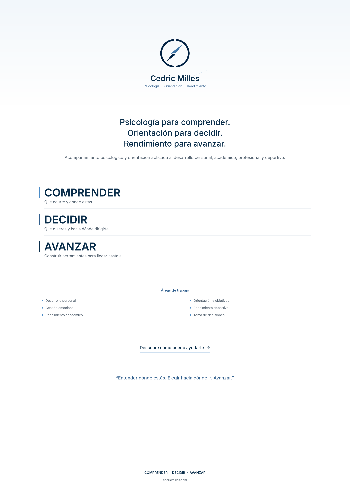
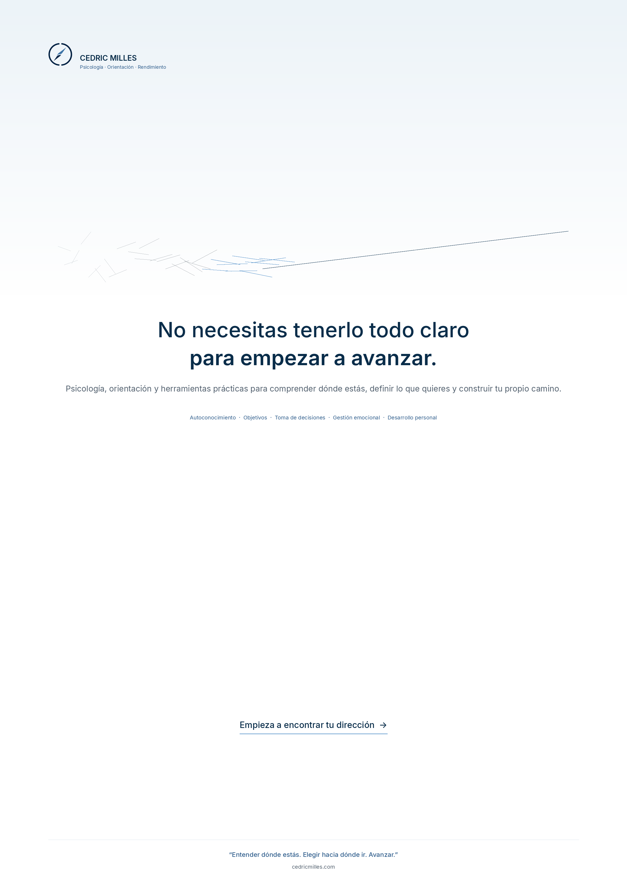
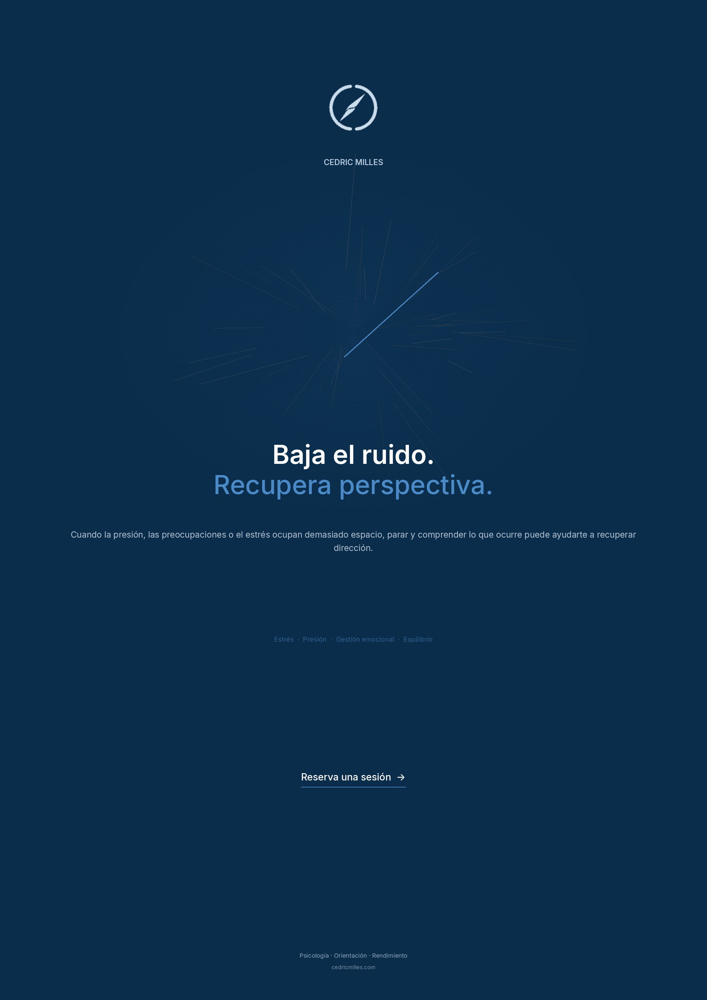
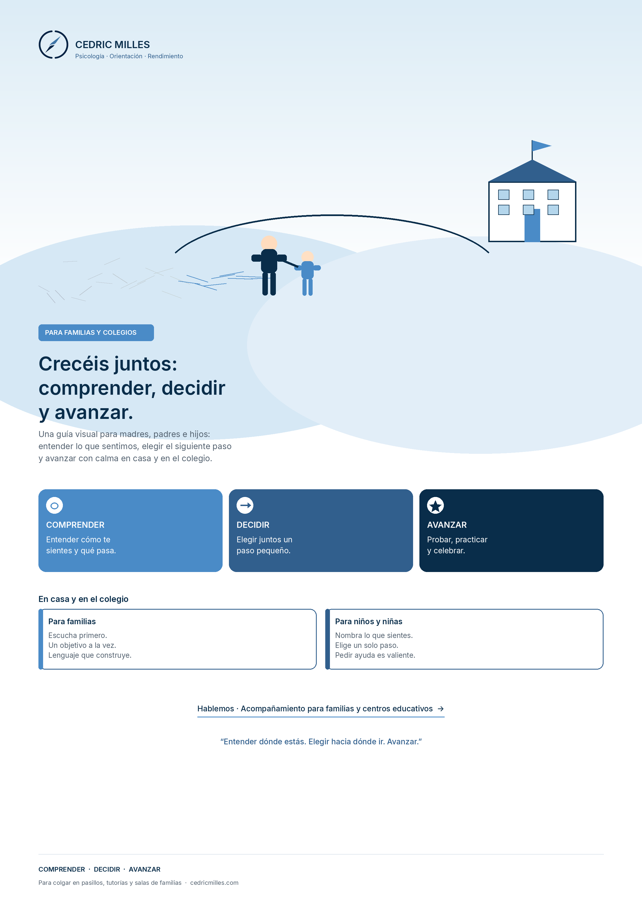
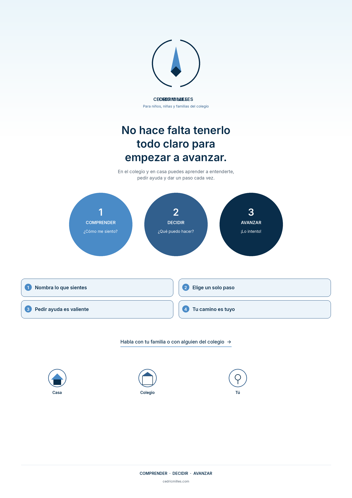
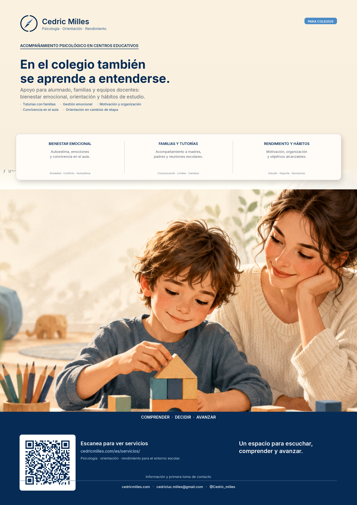
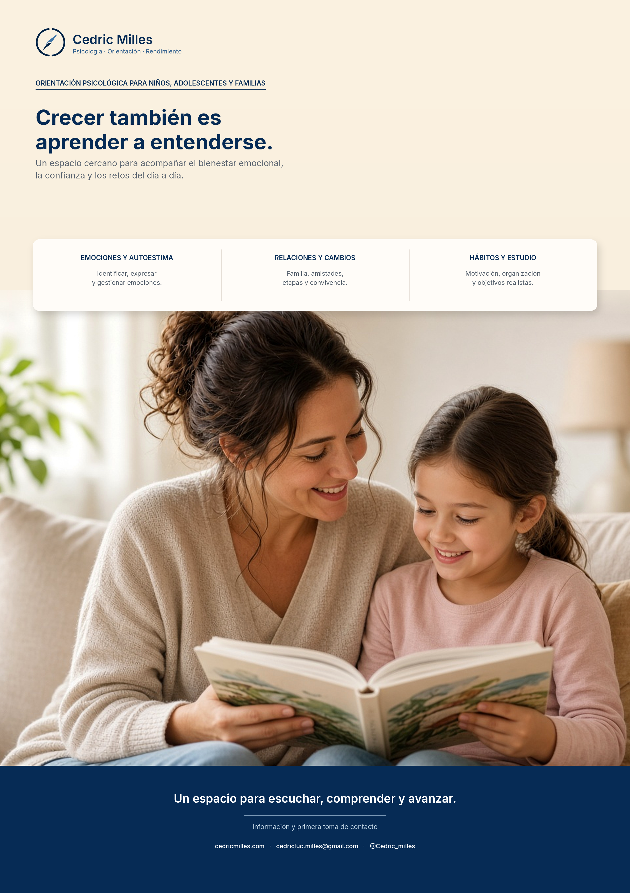

1. Institucional
Versión editorial con los tres pilares de marca y áreas de trabajo. Ideal para consulta, eventos y materiales corporativos.

2. Bienestar y crecimiento
«No necesitas tenerlo todo claro para empezar a avanzar.» Línea visual de desorden a dirección.

3. Claridad ante el ruido
«Baja el ruido. Recupera perspectiva.» Fondo azul petróleo y metáfora de brújula sobre el ruido mental.

4. Escolar · Familias y colegios
«Crecéis juntos: comprender, decidir y avanzar.» Ilustración familia–colegio y consejos para casa y aula. Ideal para pasillos, tutorías y salas de padres.

5. Escolar · Niños y niñas
«No hace falta tenerlo todo claro…» Tres círculos COMPRENDER / DECIDIR / AVANZAR y pasos visuales fáciles de leer a distancia.

7. Colegios · QR servicios
«En el colegio también se aprende a entenderse.» Detalle para centros educativos con QR a cedricmilles.com/es/servicios/.

6. Orientación para familias (estilo foto)
«Crecer también es aprender a entenderse.» Cabecera cream, tres áreas de trabajo, fotografía cálida y pie de contacto en azul petróleo.